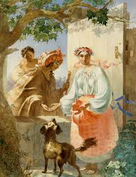

КАТЕРИНА

Кохайтеся, чорнобриві,
Та не з москалями,
Бо москалі — чужі люде,
Роблять лихо з вами.
Москаль любить жартуючи,
Жартуючи кине;
Піде в свою Московщину,
А дівчина гине...
Якби сама, ще б нічого,
А то й стара мати,
Що привела на світ Божий,
Мусить погибати.
Серце в’яне співаючи,
Коли знає, за що;
Люде серця не побачать,
А скажуть — ледащо!
Кохайтеся ж, чорнобриві,
Та не з москалями,
Бо москалі — чужі люде,
Згнущаються вами.

Не слухала Катерина
Ні батька, ні неньки,
Полюбила москалика,
Як знало серденько.
Полюбила молодого,
В садочок ходила,
Поки себе, свою долю
Там занапастила.
Кличе мати вечеряти,
А донька не чує;
Де жартує з москаликом,
Там і заночує.
Не дві ночі карі очі
Любо цілувала,
Поки слава на все село
Недобрая стала.